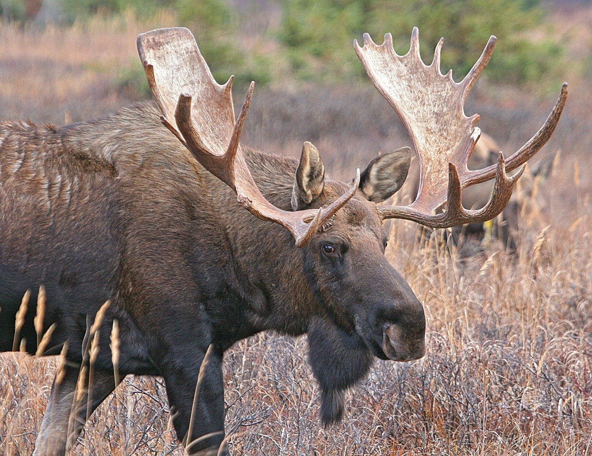
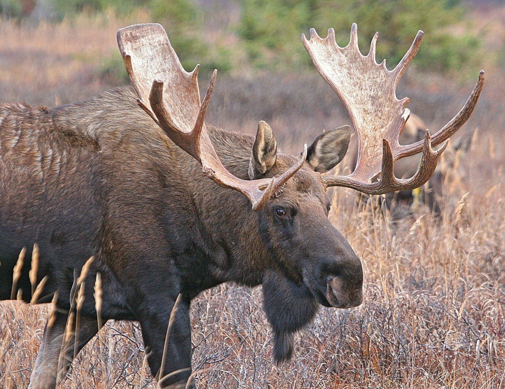
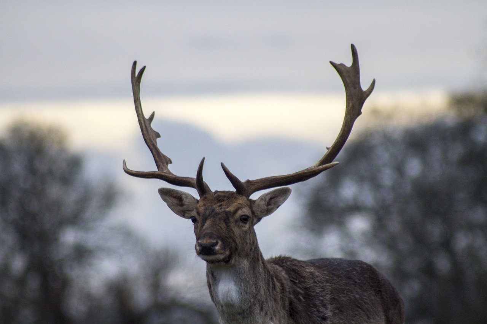
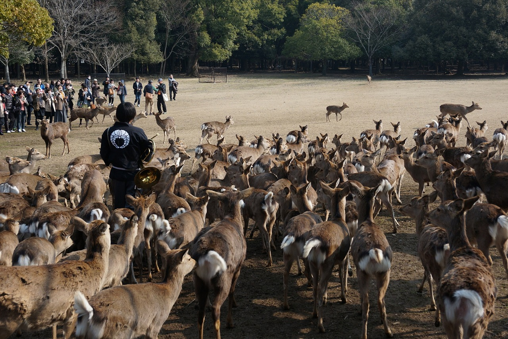

1.分類
学名：Cervidae Goldfuss
シカ（鹿）は、鯨偶蹄目シカ科 (Cervidae) に属する哺乳類の総称である。
ニホンジカ、トナカイ、ヘラジカなどが属しており、約16属36種が世界中の森林に生息している。
 ※トナカイ
※ヘラジカ
※トナカイ
※ヘラジカ
2.身体的特徴
オスは枝分かれしたツノを持つ。多くのシカ科のメスはツノを持たないがトナカイはオスメス共にツノを持つ。シカのツノは骨組織からなり、毎年生え替わる。春季の生えたばかりの角は柔らかく表皮に覆われているが、秋季の骨化した角は固く、表皮は脱落する。
日本では鹿肉のことを「もみじ」と呼び、様々な肉料理に調理される。味は一般に柔らかい牛肉に近い。「もみじ」という呼び名は馬肉を「さくら」、イノシシ肉を「ぼたん」と呼ぶのと同様の隠語で、鹿肉は「鹿」が秋の季語であることから紅葉を連想したもの、あるいは花札の「鹿にもみじ」の絵札から連想したものとされる。
3.生態的特徴
鹿の皮は細かい繊維が緻密に絡み合った独特な構造をしており柔らかで滑らかである。鹿革（ディアスキン）は通気性や保温性に優れ手袋や衣料に用いられる。日本では武具の材料としてよく用いられた。 また、油でなめしたものをセーム革といいカメラのレンズや宝飾品の汚れ落とし、洗車用品、ガソリンのろ過などに用いられる。
枝角はナイフの柄やボタンなどに用いられている。鹿の枝角は、アントラ（Antler）と呼ばれている。鹿の角（鹿茸）は乾燥粉末や黒焼末は様々な効能を持つとして民間療法で用いられる。
 ※ニホンジカ
※ニホンジカ
ニホンジカのメスの群れは母系集団で、群れで産まれたメスとその母親で構成される。オスは生後1 - 2年で産まれた群れから独立する。生後2年以上のオスはオスのみで群れを形成する。
奈良公園や金華山では優位のオスはメスの行動圏に縄張りを形成し、縄張り内から離れようとするメスに対して先回りして攻撃し囲いこむようになる。
4.食性／繁殖
食性
草食性で、ウシのように4つに分かれた胃を持ち、反芻による消化を行う。 北海道・本州などの落葉広葉樹林に生息するニホンジカはイネ科の草本、ササ類の葉、木の葉、堅果、樹皮などを季節によって食べる。九州などの常緑広葉樹林に生息するニホンジカは周年木の葉を食べる。
繁殖
ニホンジカの場合、妊娠期間は約230日。5月下旬から7月下旬に1頭の幼獣を産む。最高寿命はオスは約15年、メスは約20年である。
5.生息分布
ニホンジカの主な名所として、奈良公園・若草山（「奈良の鹿」として天然記念物に指定されている。）、宮島 - 宮島の鹿、牡鹿半島・金華山が挙げられる。
※奈良の鹿の給餌の様子6.起源／歴史
世界各地の山野に数多く生息していたシカ科の動物はほとんどの民族の文化に対して古くから重要な影響を与えていたと思われる。
以下は、シカにまつわる伝説・逸話の一部である。
・ギリシャ神話では、月の女神アルテミスの水浴を見たアクタイオーンが鹿に姿を変えられている。
・トナカイは古来ソリを引く使役や荷役にも利用され、クリスマスにサンタクロースのソリを引く『赤鼻のトナカイ』の伝説にもなった。
・鹿島神宮・春日大社などで神使とされる。古事記において、オオクニヌシに国譲りをさせる際、アマテラスは使者としてアメノオハバリを選び、その伝令にアメノカク（天迦久）を派遣したとあり、このアメノカクが鹿の神とされる（「迦久」は鹿児を意味する）。